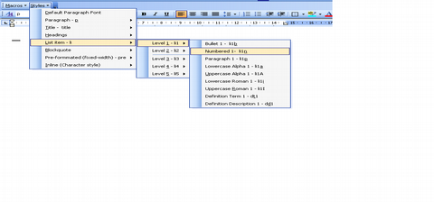

Word lists without tears
2006-06-07
I have recently complained about the appalling complexity of lists in Microsoft Word. But actually lists in Word have not caused me much anxiety since that late nineties, when I designed the technique I'll describe here for managing lists without tears. Since I got access to a well set up template with a good way to access styles life in the word processor has been easy. I forgot what it was like without such a template when I started evaluating Word 2007 and revisited some of the old issues.
Here I will tell you in how to set up a set of lists with bullets, Roman numbering and alphabetic numbering that will let you nest lists inside each other, along with blockquotes and preformatted and HTML-style definition lists.
Actually, all you need to know is contained in the ICE word template but I'll explain they key points here.
The key, of course, is to use styles. Styles are the solution to most word processing problems.
About styles
There are three-and-a-half kinds of styles in Word.
Paragraph styles : These styles let you label your paragraphs with a style, and have them formatted automatically. You can say 'Heading 1' and get the correct formatting, maybe 18pt Helvetica font. Paragraph styles are at the heart of any usable Word processing system, and are particularly useful for driving good quality export to HTML, and for interoperating with other word processing systems. : It is possible in word to define paragraph styles that are linked to list formatting. For example you can set up a set of five styles “List Bullet 1” to “List Bullet 5” that are linked to five levels of a multilevel list.
Character styles : This is the same idea as paragraph styles, only for sub-paragraph text spans. They're useful but suffer from some limitations because they can not be layered. Character styles don't come into this discussion at all.
List styles : List styles were introduced to Word some time after Word 2000 and I don't know much about them. Why? Because I'm not interested in features that don't go back at least a few versions. So I might start to get interested in list styles in Word in about 2010, when Word 2000 is ten years old and the number of installed copies starts to fall off. (Or I may give in and get interested this afternoon). : Besides, list styles aren't needed to make usable lists in Word, because there is another style-like thing that lets you name multilevel lists. : (I'm going to ask my contact at Microsoft why there are two kinds of named list. I have no idea why styles were introduced instead of improving the interface to what was already there.)
Multilevel list names (these are the aforementioned half-a-style)
: Multilevel lists arrived in Word 97. They are more-or-less a good
idea. One can set up a hierarchical structure with different
numbering properties at different levels and link each level to a
style.
: You can also name a multilevel list, but there are some real
usability issues with this. See my
recentrant
on the subject.
: My advice is to never, ever click on
Format / Bullets and Numbering.... Get set up with good set of
styles and keep your hands off it lest you go blind and/or insane.
Not to mention getting hairs on your palms.
:
How we use lists in ICE
In the ICE project we created a template which has several multilevel lists, all named, and all linked to styles. We have lists with bullets, numbering, upper and lowercase alphabetical numbering and upper and lower case Roman. There are also things that interoperate with lists that are not lists themselves, notably definition lists, and paragraphs that are used to continue a list item.
We use a custom menu to give access to the lists. Here's a screenshot from Windows, showing how I would apply a first level numbered list.

You can make menus like this in Word pretty easily, look under Tools / Customize and you can create toolbars and drag and drop to create a menu.
Managing all this would be impossible using the GUI in Word, because it is incomplete, so we use a set of macros to create and re-create multilevel lists as needed.
Years ago, at Standards Australia, I worked with my team to write the first version of a macro to manage lists. Since then there have been contributions made by NextEd and USQ. At USQ we're slowly rewriting the macros to make them better, and eventually we will be able to publishing the rewritten ones under the GPL (the first ones I wrote were really awful, and while Standards an NextEd both made the template freely available there is no formal licensing on the code). The macros in question are a bit lengthy to put here, but if you download the ICE template you can find them. I'll just say here what each important bit does.
The current version of the ICE template has a single macro in the
ICE Toolbar, called Repair Lists. This calls repairListInstances
in the OpenSource module in the ICE template. I'll talk through the
important code here (there's more, but if you can read code you can
figure it out).
OpenSource.repairListInstances()
: This is a fairly crude macro that visits every paragraph in the
document and re-applies the style it is meant to be in, and based on
the style name tries to work out whether lists need to be restarted.
The algorithm is a bit dumb but the restart will work for most
lists.
: Interoperability with OpenOffice.org Writer is still a bit of a
problem with this macro, as Writer has trouble preserving Word's
list information when it imports .doc files. We're working on it.
: But before this macro does its work it calls
ouline.setListOutlines().
ouline.setListOutlines()
: This one first builds a list of multilevel lists that are already
there, and (ugh) stores their names in a string. Then it is possible
to go and create all the necessary multilevel lists, by first
checking if they exist.
: For each multilevel list the code then loops through five levels and
creates the correct formatting (if you want different formatting,
say a different indent quantum, you can hack the macro).
Other important styles
There are some other styles that are indented like lists but don't really need to be Multilevel lists (although they could be if we got around to it). These are definition lists, as used in this post, blockquotes, and preformatted text for things like code samples, which I have spared you in this particular post.
The ICE team (Pamela Glossp and Daniel de Byl in particular) have set up all these styles by hand, mostly using the GUI in Word, although I did some of the initial work by saving the a document in Word's HTML format and search 'n' replacing various formatting in the CSS block, then re-loading it and saving it as a template.
With the new XML-based formats coming we'll be able to hack Word templates just like we did OpenOffice.org, using similar techniques to the ones I wrote about for xml.com. This makes it much easier to generate large numbers of consistently formatted styles than you can manage by laboriously clicking through layer after layer of GUI.
What's the point?
I've kind-of ignored the main reasons for doing all this so far in this post. But there are some really good reasons for going to all this trouble to get a template set up properly. I go on about interoperable word processing all the time here, so there's plenty to read up on. But I'll give you two reasons why this is important right here.
Authors can work without distraction : Instead of worrying about why lists are 'going crazy' or 'acting possessed' authors can be taught to use a single styles menu and need only run a fixup macro when things go awry. I'd almost go as far as to say this will reduce sick days in your organization but I can't prove it. : It will make authors more productive. And it will improve the consistency of documents produced in your shop. : (Stuart Stuple from Microsoft sent me draft document called something like Lists in Word are not possessed with an explanation of how to apply lists sensibly using the new Word 2007 interface. This is great stuff for the general populace who have to deal with Word directly, but you can bypass all of that and just use a template. Go on, download ours and change it to look the way you want it.)
Documents can be exported to XHTML : Using a set of styles that is designed to export to XHTML means you can export to XHTML. True, the Word team are working on an XHTML export for blogs, but all the discussion that's been posted by Brian Jones so far is centred around mapping word formatting to XHTML formatting, not Word Styles to XHTML elements. : I'd love to be able to offer you all a pure Word-based converter, but at the moment I don't have time. : I'd really love it if Word had a place to plug-in something like an XSLT stylesheet (like OpenOffice.org) to build an export filter. : I'd really really love it if Microsoft built something like ICE into the default template in Word and took care of the export, but I'm not holding my breath. : What I can offer is that the ICE system can deal with Word .doc files and via OpenOffice.org can turn them into pretty decent XHTML. : Pretty soon the ICE team will be looking at replacing our XSLT stylesheets for turning OpenDocument + ICE template documents into XHTML with straight Python code. That Python code should be very easy to adapt to the new Open XML formats, and would be easy to port to other languages. The stylesheets are not easy to adapt, they involve a mind-bending and inefficient algorithm which I wrote but can no longer bear to maintain. : Or you could pick up on the Word to XML stuff I wrote about on xml.com and get started on a Word + ICE to XHTML transform right now in the language of your choice.